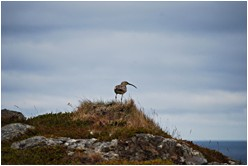
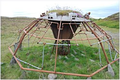
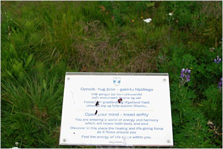
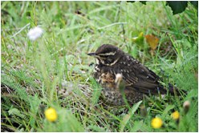

Selvfølgelig prøver de at aflede opmærksomheden fra deres reder, men jeg lurer en af dem, så jeg kan nyde dens beskedne, ret udsatte men godt camouflerede residens i græsset, hvor fire olivengrønne, plettede æg ligger, smukkere end det mest raffinerede kunstværk. Fire nye repræsentanter for Lille Regnspove er på vej til verden. Hvordan jeg kan vide, at det ikke er Stor Regnspove, spørger min kone. Jeg ved godt, det er for at glæde mig med at få lejlighed til at holde et mindre foredrag om fuglen, og jeg kan så fortælle om dens mørkebrune isse, det generelt mindre format, både hvad ben og næb angår, samt det sjove fænomen, at den i flugten ikke stikker benene ud bag halen, sådan som ”storebror” gør det. Dens latinske navn er Numenius phaeopus…ja, tak, siger min kone, men hun vil godt høre, at den er en af Islands mest almindelige ynglefugle, og at dens vinterkvarter findes et sted i Afrika. Da vi fjerner os fra spovens privatsfære følger den os et stykke vej, stadig mistænksom, hørbart fornærmet over forstyrrelsen. Egentlig havde vi tænkt os at vandre øen rundt, men det bliver kun til et næsten, fordi en del af Hrisey er privatejet og altså utilgængelig uden forud indhentet tilladelse. Det gør ikke så meget, vores afgrænsede tur har rigeligt at byde på. Vi standser ved en lille lund med stedsegrønne træer - lidt af et særsyn herovre- og en uanselig sanger flagrer forbi, en gransanger? Her! Det bliver aldrig afklaret, for den har ikke tænkt sig at forære os en cat walk, men ifølge ornitologerne er den temmelig sjælden, så min kone foreslår, det kunne være en gråsisken; nu er der bare det, at fuglen virkelig sang, hvad en gråsisken ikke har for vane at gøre. Jeg må leve med uvisheden. Hrisey begaves med mere end fyrre forskellige fuglearter, så der er nok at tage fejl af for en mindre kyndig fuglefreak som mig, men jeg kan da kende dobbeltbekkasinens underlige lyde højt oppe i luften, de lyde, der har forskaffet den øgenavnet ”horsegøg”, og havternernes voldsomt skrigende mængde er heller ikke til at tage fejl af. Sværere er det, når vi skal spotte havfuglene i de bølgeskabte huler nede ved foden af klipperne, jo, kjove og svartbag lader sig se og hættemåge, men er det der på vandoverfladen vuggende fjerkræ alk, lomvie eller tejst! Vi må snarest få købt en stærk telelinse til vores digitale spejlreflekskamera.
På en græstue i første parket med en isnende smuk udsigt indtages den medbragte mad, der er pakket ind i en madopskrift, jeg havde tiltusket mig på en eller anden restaurant med det håb selv at realisere den engang, når den centrale råvare burde være tilgængelig. Fantasien omfattede en hyggelig lun hytte, simrende gryder, en flaske Morgon, min kønne kone og undertegnede, udgangspunktet skulle være: Ryper i flødesovs. Anskaf hos vildthandleren to fuldfede ryper, bed om at få lever, hjerter og kråse med.
Læg ryperne i en tykbundet gryde, brun dem godt i smør. Brun indmaden. Hæld vand og mælk på, så de lige dækker fuglene, tilsæt salt og knuste enebær og lad ryperne simre under låg i 35 minutter. Tag dem op og hold dem varme i folie. Kog kraften en smule ind, si den eventuelt og jævn med en skefuld maizena. Tilsæt fløde, gedeost samt rønnebærgele. Herefter koger sovsen for svagt blus i 5 minutter og smages til med salt og peber. Ryperne halveres og serveres med råstegte kartoffelskiver. Æblestykker marinerede i figenvinaigre er glimrende tilbehør. Vi synes måske nok, at hangikjöt og hardfiskur vender sig lidt tungt og svært opløseligt i munden, da mundvandets præferencer efter læsningen af opskriften har ændret karakter, men det skal ikke vare længe, før vi beklager vores lystne trang til ryper i flødesovs. Få minutter efter at have forladt græstuen møder vi faktisk et lyslevende eksemplar af Lagopus mutus, også kaldet fjeldrype. Den løber ud på stien, hvor vi går, så tæt på, så man næsten kunne snuble over den, og så spiller den vingeskudt, slæber sig haltende sidelæns i græsset; hvilket skuespillertalent, det er lige før, vi venter at høre bevingede ord. Spændte spejder vi efter dens unger, som må gemme sig lige i nærheden, siden hunnen udfolder sig så dramatisk, og da vi næsten for fødderne af os får øje på de fine små dundynger, som er med på fourageringstogt, forstår vi hendes beskyttertrang. Efter denne gribende naturoplevelse forsvinder som nævnt trangen til at følge den medbragte opskrift, menuen kommer nok til at bestå af fisk, der ikke rigtig kan matche fuglens charme. Fjeldrypen er i øvrigt Islands eneste hønsefugl, til gengæld er den meget talrig med over 100.000 par, fordelt over stort set hele landet i vekslende terræn. Den er en mester i camouflage, om sommeren iført sin gråbrune fjerdragt, om vinteren helt hvid bortset fra en rød aftegning over hannens øjne. Lige da vi forlader rypens område, vælger hannen at solidarisere sig med magen gennem nogle umusikalske snorkende og rallende ”skrub af-lyde”; ja ja, det ér forstået. Hrisey er naturligvis andet end smukke fugle, der i sagaens ånd forsvarer slægtens bevarelse. Inde på øen står der et kunstværk, som får mig til at tænke på det, Auguste Rodin, den berømte skulptør, engang udtalte: Der findes intet, der kan forskønne naturen. Mon ikke man forstår min association, når billedet her betragtes? Skæmme landskabet gør skulpturen ikke, den fremstår snarere som en raritet end som en integreret medspiller i omgivelserne, men den mister den appel til nysgerrigheden, kunst kan besidde, når et værk får lov til at bevare det uforklaredes aura af mystik. Desværre er der nemlig ved siden af skulpturen anbragt et stort skilt, som giver os en meget omfattende facitliste:
I den gamle nordiske asareligion er der en central akse til universet, som knytter hele verden sammen. Det er et træ, kaldet Yggdrasil, livets træ, selve naturens egen kilde. Skulpturen ”Yggdrasil” sammenligner mange af symbolerne, temaerne og systemerne i asatroens lære om verdensaltet med den moderne vestlige civilisations mekaniserede industrielle systemer.
Sådan lyder indledningen på den autoriserede udlægning af kunstværket, hvorefter der fortolkes helt ned i den mindste detalje; hold nu ørene stive:
Som
beskrevet i de islandske sagaer var universet bygget ud af giganten
Ymers hovedskal. Skulpturens basale kuppellignende struktur af
stål gengiver denne hovedskalsform. Universets kuppel holdes
oppe af de fire dværge, Nord, Øst, Syd og Vest. Disse
udgøres af fire store sten omkranset af et zinkovertrukket
stålskelet, som både er figurativt og associerer til
elektriske kabeltårne. Giganternes land, Jotunheimen, komponeret
af adskillige tilhuggede sten forestillende hoveder, omgiver dværgene.
Inden for Jotunheimens ydre ring er der en serie på 36 pyramidiske
”miniaturebygninger” pegende indad. Det er det iskolde
øde land Niflheim, asatroens svar på helvede …………
Følges stålkablerne opad, kommer man til kuplen,
hvor træet Yggdrasil gror. Træet er omgivet af en
sti af mos og græs med 12 guldovertrukne sten, som repræsenterer
Asgård, gudernes hjem. Menneskenes verden, Midgård,
omkredser Asgård………. Således
fortsættes der længe, med utallige referencer til
den nordiske mytologi, indtil den dog trøsterige slutning:
Selvom skulpturen er inspireret af asatroens kosmologi, er de
specifikke detaljer ikke så vigtige at kende for beskueren.
Form, materiale og dynamik arbejder sammen, så mere åbne
metaforer og temaer kan opleves på bekostning af den eksakte
fortolkning. Heldigvis
nåede jeg at betragte ”Yggdrasil”, inden skiltets
facitliste indsnævrede dens potentiale.
Vi forlader den lille lavning i landskabet, hvor ”Yggdrasil” er anbragt, forcerer en temmelig stejl skråning og er tilbage i den uforskønnede natur. Vi støder på mange andre meget mere beskedne skilte undervejs, de fleste pædagogisk - i ordets bedste forstand - oplysende om øens rige flora og fauna, andre der meget illustrativt forbyder hunde at efterlade sig uhumske visitkort, og endelig et helt specielt, hvis ordlyd jeg selv kunne have forfattet:

Ja, åbn dit sind, når du færdes på Hrisey og bliv rigeligt belønnet. Ingen skal beskylde undertegnede for at være en sværmer, men det er altså ikke løgn, hvad skiltet hævder: der er virkelig noget healende ved et ophold her. Første gang, jeg besøgte øen, satte jeg mig op ad en af de rødmalede pæle, som holder én orienteret om vandrestien, et regnspovepar havde travlt med yngelplejen, og lidt snerpet måske glædede den kendsgerning mig, at regnspoven er en monogam fugl. I den friske vind varmedes jeg pludselig igennem af en enlig solstråle, mens ørene fyldtes af en blanding af havets brusen og spovernes skrig, og ude på vandet skimtedes en flok edderfugle med deres afkom, nysgerrigt iagttaget af en lille koloni bjergænder samt af en fra et klippefremspring arrogant nedstirrende skarv. Jeg blev grebet af en meditativ stemning og gled ned i et behageligt stikkende blåbærkrat bag den røde pæl, stirrende blindt op mod skyernes trolde og feer, helt fri af hverdagens kedsommeligt rationelle gøremål. Om det var en lykkelig stund? Lykke er et svært begreb, som måske ikke kan skildres i ord, men netop er selve solvarmen, lydene og duften fra jordens vækster. Det er imidlertid en underdrivelse at sige, at jeg havde det rigtig fint.
Det har jeg også nu, mens vi går videre med alle sanser åbne. Min kone er optaget af at nyde jordbundens farve- og strukturrigdom, hendes digitale vidunder er næsten rødglødende aktivt med at indzoome de beskedne men ekstremt livsduelige vækster: |
Vores ”rød rute” er snart tilbagelagt, vi vender næsen hjemad mod den lille by, som bebos af øens omkring 200 sjæle. Der har boet folk her siden landnamstiden, og første øbo skulle ifølge overleveringen være Steinolfur Ôlvisson den Korte, en af legendariske Helgi den Magres mænd. De nuværende beboere lever stort set af et fiskeri, der så bedre dage, indtil dengang i 1960erne, hvor fiskebestandene faldt drastisk, og af turisme. Mange islændinge betragter Hrisey som et velvalgt mål for weekendudflugten, nogle vælger en af de afmærkede vandreruter, andre kommer alene for at spise på byens restaurant, Brekka. Min kone og jeg er ubeskedne nok til at benytte os af begge tilbud. Brekka byder på meget godt fra havet, og vi skeler over til fire amerikanske turisters seafood pizza, men vi foretrækker dog en saftig Gallowaybøf, hvilket jo også giver os et alibi for at drikke et par glas rødvin. Mens vi nyder maden, hører jeg fra nabobordet enkelte ord: Spøgelser. Thorgeiers tyr. Shark Jörundur Jóhnson. Da amerikanerne er brudt op, spørger jeg den unge servitrice, om hun kender noget til de nævnte, men, jo, hun mener nok at have hørt om dem, altså, men------. Der er åbenbart mere at udforske om Hrisey og dens historie; pokkers, så er jeg nødt til at vende tilbage!
Udenfor ser vi Hriseyjarferjan forlade Árskógssandur ovre på fastlandet, om et kvarters tid må vi tilbage, men på vej gennem Brekkas forhave forærer øen os endnu en lille gave. Om det er vores vinøse ånde, der har bildt den ind, at vi er helt ufarlige pseudoslægtninge, vides ikke, men en ung vindrossel plirrer venskabelig nysgerrigt op til os fra en lille bevoksning. Måske siger den: På gensyn.

Copyrigt Preben Rasmussen(tekst) Elisabeth Frank-Rasmussen(fotos)
<< retur
|